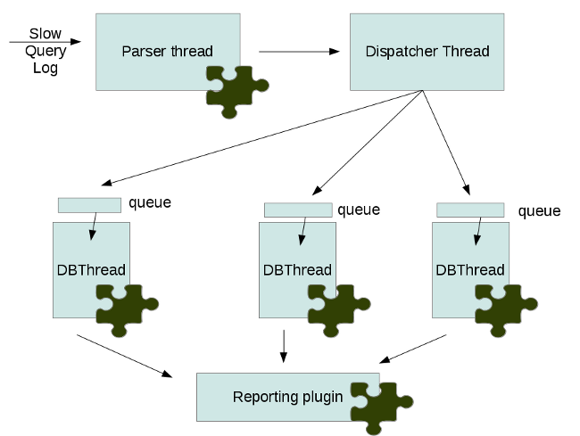

Playback is a tool for replaying the load of one database server to another. Currently it can read queries from MySQL query-log files and run them on other MySQL server. It has plugin architecture and can be extended with different plugins. Playback is an open source tool designed for Percona internal use. It is provided as a courtesy to users and customers, however it is not supported under a Percona Support subscription. To get the best experience and results from Playback, users and customers are encouraged to work with the Percona Consulting team on project specific needs and requirements.
There are following categories of plugins for percona-playback:
- input - responsible for where input data is given from,
- dispatcher - responsible for replaying the queries
- db - where queries should be played,
- report - how to represent results,
- other - plugins that doesn’t belong to the previous categories.
Each plugin can have own set of command line options which are usually provided with help messages.
At this moment the following plugins are implemented:
- input
- query_log - reads queries from query-log files
- dispatcher
- thread-per-connection - this plugin uses one thread per connection for replaying the queries.
- thread-pool - uses --thread-pool-threads-count to enable more queries per connection by utilizing the thread pool.
- db
- libmysqlclient - plays queries in MySQL server
- null - doesn’t play queries anywhere but useful for testing
- report
- simple_report - output information about executed queries in simple form
The engine’s architecture can be configured with the --dispatcher-plugin option. Each thread has queries queue. Input plugin parses input data and pass parsed queries to the engine. The engine pushes queries to the queue of certain db thread. The queue size can be limited with --queue-depth command line option. If the limit is reached the engine will stop input plugin thread until the size of the queue becomes less then the limit.
Input data can be played several times in a row. The number of repeats can be set with –loop command line options (NYI).